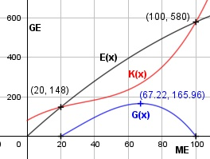

Aufgabe 93 Bei einer Marktuntersuchung stellt ein Hersteller fest, welche Anzahl von seinem Produkt bei unterschiedlichen Preisen verkauft wird. Preis in € 7,40 7 6,60 6,20 5,8 Anzahl 20 40 60 80 100 a) Wie lautet die lineare Preisabsatzfunktion p? b) Wo liegen Gewinnschwelle und Gewinngrenze, wenn die Kostenfunktion K(x) = 0,001x3 - 0,1x2 + 5x + 80 lautet? c) Wie hoch ist der maximale Gesamtgewinn? a) Allgemeine Form der gesuchten linearen Funktion p(x) = mx + b. x Anzahl, p Preis. Gewählt erstes und letztes Wertepaar. y2 - y1 5,8 - 7,4 -1,6 m = --------- = ----------- = ------ = -0,02 x2 - x1 100 - 20 80 Erstes Wertepaar und m in p(x) = mx + b eingesetzt: 7,4 = -0,02 * 20 + b 7,4 = -0,4 + b |+0,4 b = 7,8 p(x) = -0,02x + 7,8 b) E(x) = p(x) * x = -0,02x2 + 7,8x G(x) = -0,02x2+7,8x - (0,001x3 - 0,1x2 + 5x + 80) G(x) = -0,001x3 + 0,08x2 + 2,8x - 80 G'(x) = -0,003x2 + 0,16x + 2,8 G''(x) = -0,006x + 0,16 -0,001x3 + 0,08x2 + 2,8x - 80 = 0 Wertetabelle: x 10 20 30 G(x) -45 0 49 Hornerschema: -0,001 0,08 2,8 -80 x1 = 20 -0,02 1,2 80 ---------------------------------- -0,001 0,06 4 0 Polynomdivision: -0,001x3 + 0,08x2 + 2,8x - 80 : (x - 20) = -(-0,001x3 + 0,02x2) --------------------- 0,06x2 + 2,8x - 80 -(0,06x2 - 1,2x) -------------------- 4x - 80 -(4x - 80) ----------- 0 Ergebnis = -0,001x2 + 0,06x + 4 -0,001x2 + 0,06x + 4 = 0 |:(-0,001) x2 - 60x - 4 000 = 0 p, q - Formel: p = -60, q = -4 000 x2,3 = x2,3 = 30 ± x2,3 = 30 ± x2,3 = 30 ± 70 x2 = 100 ME = Gewinngrenze x3 = -40 keine Lösung x1 = 20 ME = Gewinnschwelle c) -0,003x2 + 0,16x + 2,8 = 0 A, B, C - Formel: A = -0,003, B = 0,16, C = 2,8 x1,2 = x1,2 = x1,2 = -0,16 ± 0,2433 x1,2 = ----------------- -0,006 x1 = 67,22 ME G(67,22) = -0,001 + 67,223 + 0,08 * 67,222 + + 2,8 * 67,22 - 80 = 165,96 GE x2 = -13,88 keine Lösung G''(67,22) = -0,006 * 67,22 + 0,16 < 0 --> Hochpunkt (67,22|165,96) Der maximale Gewinn beträgt 165,96 GE. Der dazugehörige Preis beträgt p(67,22) = -0,02 * 67,22 + 7,8 = 6,46 GE/ME
